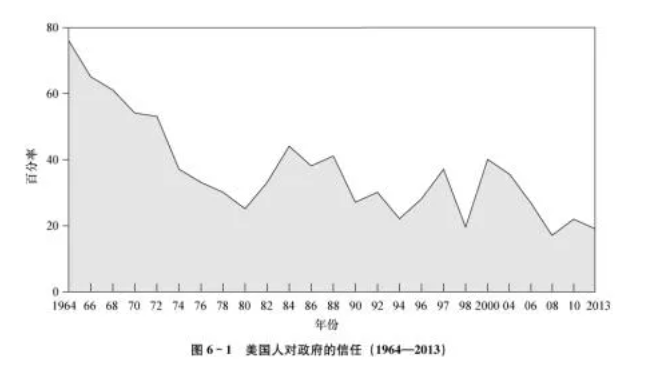

收录于合集

图书简介
政治科学（第14版）
[美]迈克尔•G.罗斯金（Michael G.Roskin）等著
中国人民大学出版社
2021年12月
推荐语
经典读物 作者用 简洁凝练又生动活泼的语言 勾勒出现代政治的基本轮廓和运作框架，告诉读者政治学是什么、政治学有什么用处、现代政治是如何运作的。对于那些认为政治很抽象、是一项精英的高深智力游戏的读者而言，本书无疑开启了崭新的视角。
开放思维 本书并不灌输知识，而是提供分析问题的思路和视角，将价值判断和思考的空间留给读者。 作者力求以科学、客观的态度分析不同流派的理论，为读者呈现政治科学的基本方法论和重要观点。
兼容并包 本书的一大特色就是 嵌入了很多常用的社会科学研究方法和写作规范 ，并且结合章节的内容介绍了政治科学研究和分析的基本方法。 全书以专栏的形式穿插了不少政治科学领域的重要理论和经典作品的简介，以及一些典型的案例研究。 这些都有助于读者拓宽知识面，把握经典理论，理论联系实际分析问题。
导读
01
著者简介
迈克尔•G.罗斯金（Michael G. Roskin），美国当代著名政治学家，曾任美国宾夕法尼亚州莱康明学院政治科学系主任、教授，在政治科学和比较政治学领域颇有建树，主要著作有《政治科学》《国家的常识：政治•地理•文化》《国家关系新世界》《民主苦旅：四个发展中国家》《中东政治：文化和冲突》等。
02
内容简介
-
为什么会有战争？
-
为什么民主制度会失效？
-
意识形态如何影响我们的看法？
-
美国总统的权力是否过大？
-
人们为什么要投票？谁来投票？
…………
由迈克尔·G.罗斯金等人撰写的《政治科学（第14版）》将为我们逐一解答。
作者紧扣政治学的基本概念，以方法论贯穿全书，同时运用丰富的案例、专栏介绍政治科学的整个领域，探讨了政治意识形态、国家、政体、政治文化、政治沟通、利益集团、政党、选举等政治学领域的重要议题，将思考政治的方式、个人与政府的关系、政治参与的价值娓娓道来，展示了与生活密切相关的生动的政治科学，为读者理解政治和政治科学提供了重要的启发。
03
目录
第一篇 政治学基础
第1章 政治与政治科学
第2章 政治意识形态
第3章 国家
第4章 宪法与权利
第5章 政体
第二篇政治态度
第6章 政治文化
第7章 民意
第三篇 政治互动
第8章 政治沟通
第9章 利益集团
第10章 政党
第11章 选举
第四篇 政治制度
第12章 立法机关
第13章 行政机关与官僚制
第14章 司法机关
第五篇 政治体系做什么？
第15章 政治经济学
第16章 暴力与革命
第17章 国际关系
04
精彩书摘
前言
政治科学和民主
有人说，政治科学是不切实际的东西。他们还说，政治科学也许挺有意思，但真的没什么用处。可事实并非如此。政治最早是为统治者提出可行的建议，此作用今日仍在。比如柏拉图、亚里士多德、孔子、马基雅弗利、考提利耶（Kautilya）和伊本·赫勒敦（Ibn Khaldun）等人，都基于某种理论以提出合理建议，而约翰·洛克和孟德斯鸠则深刻影响了美国宪法的制定者。 政治作为一门科学，将理论的抽象性和应用的思辨性结合在一起。 你也许不会成为一名政治科学家，但是你 应该学会用知识武装自己，冷静、理性地判断，保护自己不受政治操纵的影响。
在生活中，我们总会面对一些重大问题，比如，民主是否可以且应该输出？中东和很多其他地区都可能受益于民主管理，但是，在这些地区强行实行民主管理是否可行？2003年，伊拉克战争最初的目的之一是在伊拉克建立民主政体，以鼓励中东地区其他国家实行民主。可是，由于没有做好充分的准备，伊拉克虽脱离了暴力独裁统治，却陷入了暴力混乱的局面。
即便在美国，为了将民主宪法付诸实践，已经努力了两百多年，但仍然不完美。改革虽势在必行，但在每一个节点上都遇到阻碍——税收、投票、竞选、游说、经济政策、政府项目等。通过检视这些问题，学生们可以明白， 民主实际上是一个不断自我批判、自我纠正的发展过程，公开讨论并承认错误是其前进的动力。民主永远都在进步。
政治学教师可能会因学生兴趣增加而兴奋，虽然我们也不确定这种兴趣是否浓厚和持久。预算紧张、开支削减、税收增加都会引起讨论。学生们曾经对政治漠不关心，这正是本书一直努力希望矫正的趋势。我们向学生提问：“你们想要什么样的国家？你们最好现在就开始培养有理性的观点，因为不久以后你们就要面临政治抉择了。”
《政治科学》一书既授业也传道。 这不意味着新生们通过学习导论课就会成为政治学方面的专家。当然，我们希望能激发他们的好奇心，使一些学生主修政治科学。本书既不是美国政府的课本，也不是比较政治的教材。相反，它用美国和其他地区的例子向新生们介绍了政治科学的整个领域。刚从高中毕业，很少有学生熟悉他国的政治体系，这正是我们想要改变的趋势。
第14版延续了我们一贯的折中方法，避免兜售任何单一的理论、概念框架或范式。 将任何伟大的设计强加于读者的企图，都是违背本学科性质的，同时也不利于学生知识视野的拓展。不同观点的教师使用本书也没有任何问题。 重要的是，第14版仍然认为政治是引人入胜的，并努力将这种感觉传递给初次接触这个学科的年轻人。
本版新处
教师们的参与、局势的快速进展以及同事们的洞见为第14版带来了以下变化：
第1章莱康明学院的乔纳森·威廉姆森讲解了政治理论以及政治科学与历史和新闻的比较。
第3章新增弗朗西斯·福山《政治秩序的起源》一书中的政治发展三阶段理论。
第4章用2015年巴黎《查理周刊》血案阐述了言论自由与仇恨演讲的相悖问题。
第6章新增“三个以色列”，描述了不断涌现的移民浪潮如何给以色列带来独具特色的政治文化。
第10章讲述茶党和超级政治行动委员会的兴起所带来的美国政党相关性的问题。
第11章提出，非白种选举人越来越重要，重组比预期发展更为缓慢。
第12章强调了立法不可理解、耗时过长的特性。
第13章新增福山的一个命题，即清廉的基于功绩的官僚体制是一个好政府的基础。
第16章强调了“阿拉伯之春”导致的悲惨结果。
同以往一样，我很乐意接受所有的批评，包括数字、封面和篇章排序等问题。比如有人会说，一本教材共14章——一个学期每周1章——这样的安排会不会更好？
利维尔（REVEL）：结合当今学生阅读、思考、学习的方式而设计的一款教育技术
当学生深度参与课程学习的时候，学习效率会更高，成绩也会更好。 利维尔的诞生是为了结合当今学生阅读、思考、学习的方式设计出一种沉浸式学习体验。在全国教师和学生的共同协作下，利维尔成为了传达培生集团理念的最新全数字方式。
利维尔用媒体互动和媒体评估的方式让课程内容变得生动有趣——这点直接体现在作者的文字当中——为学生提供课堂资料，先阅读后练习。这一沉浸式学习体验的教育技术能鼓励学生更多参与课堂，让他们更好地理解概念，取得优异成绩。
本版特色
第14版将原来的第1章和第2章合并，总共17章。第11版和第12版出版后，我们收到了教师们非常积极的反馈，将原来的21章调整为18章，现在的安排更加合理，在本科学习中，更早地引入了方法论。这不是高级的数字运算——我既不提倡也不参与——而是一个寻求经验验证的现实检验的方法。当然，你可以使用有效的数字。作为一名教师，我发现自己经常在课堂上解释与学生论文有关的方法论，所以我决定以“方法”的专栏形式插入一些基本的方法论。 这些专栏为每章的方法论做了要点说明，涵盖了中心论点、参考文献、列表、交叉表、图形、散点图和其他一些要点，都是入门级的标准。 其他专栏——理论、案例研究和经典论述——强调了政治科学的重要观点，提供了现实世界的例证，并且拆分页面，使得文本更加亲近读者。

本书将重要的术语和定义做了解释。作为一名教师，我知道不要假定学生了解政治科学中的关键术语。一个概念在特定的语境中是一个意思，换一种语境，你可能需要另一种解释。这会有一些差异，比如第5章讨论的执政精英（占总人口1% 的极少数）和第7章讨论的舆论精英（可能是几个百分点）。每一章以阅读与思考开头，并以思考题、关键术语和参考文献结尾。
排版 | 梁羽
本文章来源于“公共管理与政治学悦读坊”
文章观点不代表本平台观点